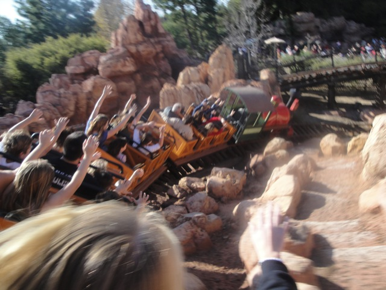
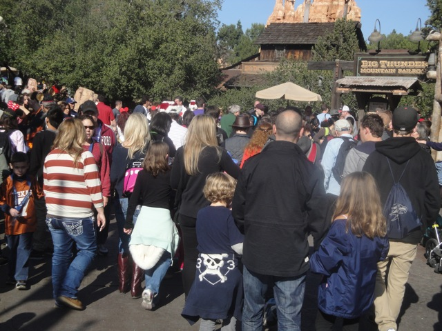
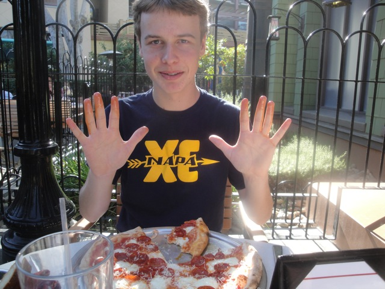
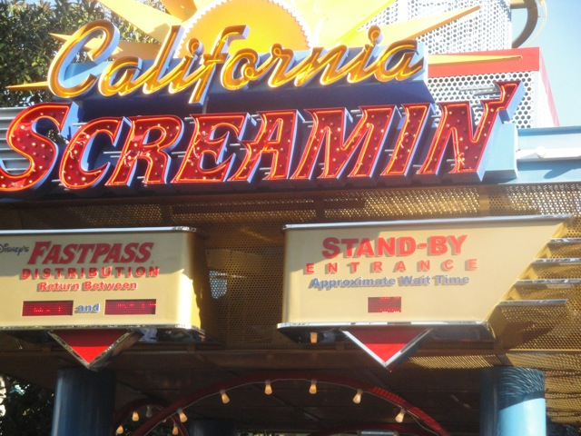
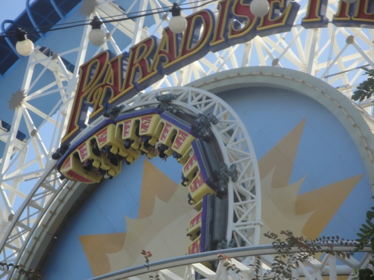
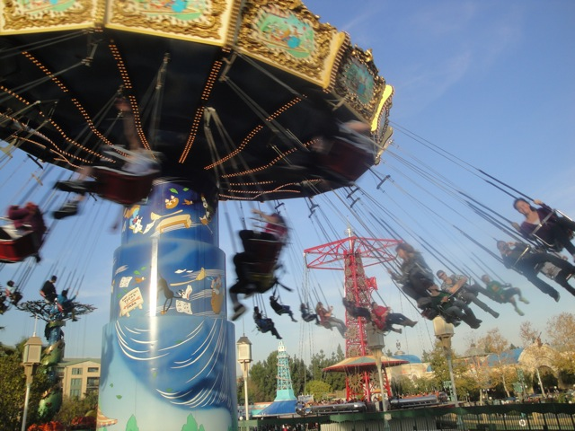
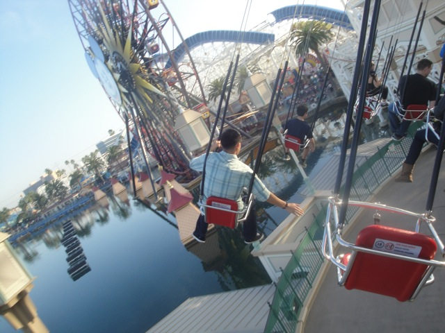
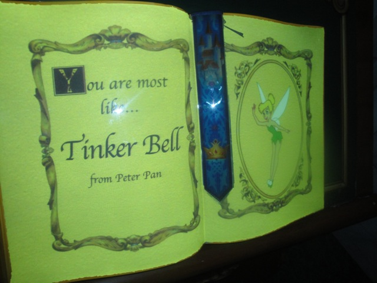
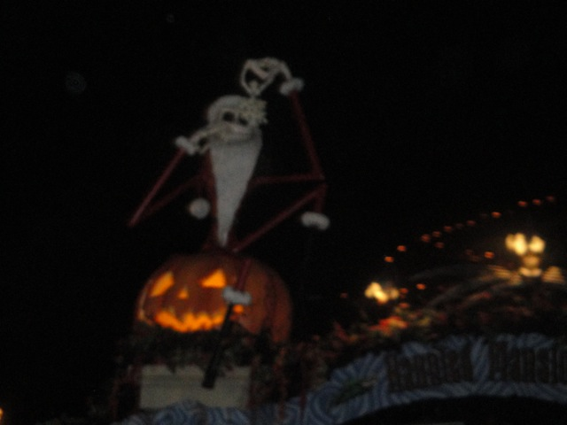
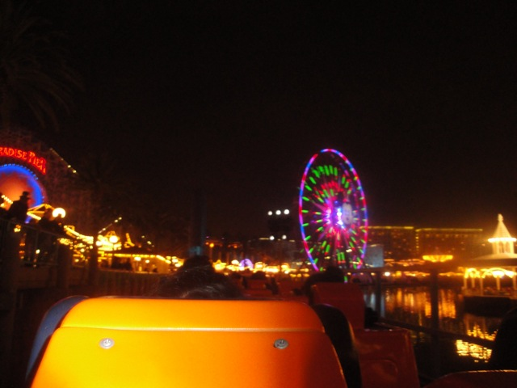

Incrediblecoasters Christmas & New Years 2011/2012
Six Flags Magic Mountain Disneyland Resort Knotts Berry Farm
 All right. Well, like I said before. I took two visits to the Disneyland Resort. One before Christmas and one right on New Years Eve. So yeah. Crowded times are a coming.
All right. Well, like I said before. I took two visits to the Disneyland Resort. One before Christmas and one right on New Years Eve. So yeah. Crowded times are a coming.
Oh crap. They're giving out the avoid crowds pamphlets. Not a good sign.
Yep. That's the plan.
Ooh. The castle looks all pretty decked out for Christmas Time.
"Yeah. I decided to become the rebel spy. Hey. I had nothing better to do!!! I come from Napa, where all there is to do is drink, smoke, and f*ck."
Oh boy. Driving the ride!!!! This is my 2nd Time on it today, as I rode it earlier when driving to Disneyland (Hey, at least there's no sun glare this time).
Yeah. This was a problem today. Everyone kept bumping the other car today. What? Was Disneyland just full of Wisconson Tourists today?
 All right. Let's take a ride on Matterhorn.
All right. Let's take a ride on Matterhorn.
 SPLOOSH!!!!!!!
SPLOOSH!!!!!!!
Yeah. Todays a good day to ride Big Thunder Mountain.
 What? Are you expecting some magnifenct caption or something? It's just Thunder Mtn. Big Whoop.
What? Are you expecting some magnifenct caption or something? It's just Thunder Mtn. Big Whoop.
Ooh. Hidden Mickey.
See this goat here? He is depressed and about to commit suicide. If you know a suicidal goat, call our goat suicide hotline at 1-800-SAD-GOAT.

Meh. It was running Ok today. But I've seen it run better.
Get used to seeing stuff like this.

HOLY SH*T!!!! THOSE DO NOT LOOK LIKE PLEASENT CROWDS!!!!!
Read the caption above.
"Ladies and gentelmen, We thank you for your patience. Space Mountain will be opening..."*cheering*"In just a few more minutes." *Awww*
"Be quiet Kevin. Space Mountain is a religous experience for me."
All right. Time for another lunch at Storytellers.
"I'll have that gingerbread house please."
"I love Mayonnaise. It needs to be on more sandwiches that I eat. I love it so much."
Yeah. We also decided to have lunch at Naples as well.

"Do you know anyone who has a New Years Resolution of eating healthier in 2012? If so, be sure to tell them about the pizza at Naples. One of the healthiest pizzas I've had in my entire life."
Damn. When was the last time I rode this?

Yeah. We also got on California Screamin today.

Thank you Single Riders Line for allowing us to get in multiple rides in today.
 California Screamin wasn't running all that well today. It was fun and all, but it almost seemed to have some headbanging today and a rattle. Weird.
California Screamin wasn't running all that well today. It was fun and all, but it almost seemed to have some headbanging today and a rattle. Weird.
Let's go wait 75 minutes for Peter Pan!!! That totally sounds worth the wait!!!! =)
Time for another spin on Toy Story Mania.
 Not bad, though I still have more improvement to go to get back to my high score.
Not bad, though I still have more improvement to go to get back to my high score.
"Eww. Wheezy just wheezed all over this snow cone."

Hmm. Today seems like a good day to take a spin on the Silly Swings.

Meh. Fun, but they're still just chairswings. Next.
Funny story. I was just standing there when someone just walked up to me and asked if I wanted this Tower of Terror Fastpass. Guess today was my lucky day. =)
 Yeah. We decided to spend more time in Animations since this place is freaking awesome.
Yeah. We decided to spend more time in Animations since this place is freaking awesome.
Yeah. I spent 30 minutes on that before taking a break. I'll finish it later.
Which Disney Character am I most like?

"Hmm, not surprised. I always felt like I should close out all Disney Films with my magic wand."
Holy Crap. I haven't seen this in years.
 Yeah. That's the result of me riding a motorcycle. In a Gonzo Suit.
Yeah. That's the result of me riding a motorcycle. In a Gonzo Suit.

Nice. Haunted Mansion Holiday is back. =)
What exactly is that thing from the Nightmare before Christmas?
Come and spin the wheel. You just might win a nice surprise.
"This jacket is made from a garbage bag. It won't help me stay dry in the least." =)
Ooh. Look at the pretty lights.
Read the caption above.
OH MY GOD!!! WALKING SPACE IN THE DISNEYLAND RESORT!!!! ITS A CHRISTMAS MIRACLE!!!!!!

Night time rides on California Screamin.
Yeah. I was a test dummy to see how long the line for Goofy's Sky School was. (Oh, and BTW, this was my last coaster of 2011.)
 Ooh. Tower of Terror looks great at night in thick heavy fog.
Ooh. Tower of Terror looks great at night in thick heavy fog.
YAY!!! I finally finished my animation!!! Yeah, It moved, though very sloppily. (I drew them too close together).
Dude. We had a blast spending at least a half hour doing various kareoke in here. =)
Oh boy!!! Now its time for the New Years Show to start!!!! =)
YAY!!!!!! 2012!!!!!!!!
Knotts Berry Farm
Home